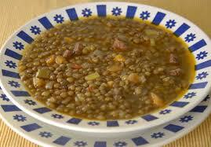

Recepta de Lentejas de lista de recetas hecha por Juan Miguel

Indice
Descripcion.
La lenteja es un tipo de legumbre formada por hidratos de carbono y proteínas, y también contiene una gran variedad de vitaminas y minerales. Por este motivo es considerada como un alimento de alto valor nutritivo.
Ingredients
- 400 g de lentejas.
- 1 patata grande.
- 2 zanahorias.
- 1 cebolla grande.
- 1 diente de ajo.
- 4 cucharadas de tomate triturado.
- 1/4 de pimiento rojo.
- 1 cuchara pequeña de pimenton ahumado.
- 1 cucharadita de comino.
- 1 hoja de laurel.
- Aceite de oliva.
- Pimienta negra.
- Sal.
- 100 ml de vino blanco o de fino (opcional).
Instrucciones.
- Poner las lentejas en una olla grande con 1,6 litros de agua fría (es posible que durante la cocción haya que añadir más, pero mejor empezar con esta cantidad).
- Añadir media cebolla entera, el ajo, el laurel, pimienta negra y sal.
- Arrancar el sofrito picando la otra media cebolla y el pimiento. Ponerlo con un buen chorro de aceite y una pizca de sal en una sartén a fuego medio bajo para que se vaya pochando.
- A los cinco o 10 minutos, cuando la cebolla y el pimiento se hayan ablandado, añadir el tomate.
- Pelar la patata y cortarla en dados o trozos pequeños. Pelar la zanahoria y cortarla en rodajas finas. Añadirlas a las lentejas cuando estas lleven unos 20 minutos cocinándose.
- Añadir el pimentón y el comino al sofrito y remover un minuto. Si se quiere, incorporar el vino blanco o jerez otro minuto o hasta que deje de oler a alcohol.
- Juntar el sofrito con la media cebolla y el ajo de las lentejas en un vaso batidor. Triturar y sumarlo a la olla de las lentejas, remover y cocer un par de minutos más. Corregir de sal.